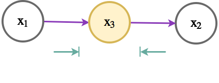
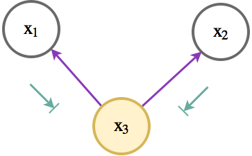
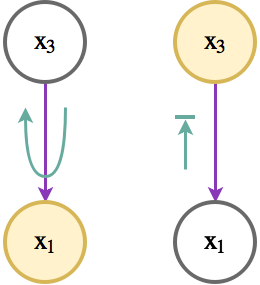

Machine Learning Quiz
Results
Time has elapsed
Categories
- Not categorized
- Distance
-
17. Question
Category: 0.1: Beyond the scope of the book : See category for detailsCategory: hard (5)workings:$ \( \newcommand\cind{\mathbin{\bot}} \) $To prove a statement $X_a \cind X_b | X_c$, the Bayes-Ball algorithm plants a ball at each of the nodes in $X_a$, shades the nodes in $X_c$ then using rules derived from canonical graphs determines whether any ball can reach a node in $X_b$, if no ball can reach any node in $X_b$, then the statement holds.
The following table shows the rules for determining whether a Bayes ball can traverse a given node given the context of the node (it's neighbours). Nodes that are conditioned are in orange/yellow. A purple arrow from $x_1$ to $x_2$ denotes the conditional dependence of $x_2$ on $x_1$. The green arrows denote the travel of the Bayes ball, if a ball cannot pass a node, the arrow is terminated with a vertical line.
Rule number Rule Dual conditioned rule 1  2 3 
 4  Q1 paths starting from $X_a$ Q2 paths starting from $X_a$ Q3 paths starting from $X_a$ The valid paths given below are justified by use of the rules above, if a rule has been used, it's rule number is given, if the rule was the conditioned dual then it is denoted by the number followed by prime, e.g. rule 1' corresponds to the rule in the top right corner.
Q1
To determine whether $X_a \cind X_b | X_c$ where $X_a = \{x_1\}, X_b = \{x_5, x_8\}, X_c = \{x_4, x_6\}$ holds, we plant a ball at $x_1$ and try to reach $x_5$ or $x_8$. The ball can traverse $x_1 - x_3 - x_6$ following rule 1, but then cannot travel any further. There are no paths from $X_a$ to $X_b$ hence $X_a \cind X_b | X_c$ holds.Q2
To determine whether $X_a \cind X_b | X_c$ where $X_a = \{x_1\}, X_b = \{x_2, x_7\}, X_c = \{x_3, x_8\}$ holds, we use the Bayes-ball algorithm planting a ball at $x_1$. Since $x_2$ can be reach from $x_1$ along the path: $x_1 - x_3 - x_2$ using the rule 2'Q3
To determine whether $X_a \cind X_b | X_c$ where $X_a = \{x_3, x_7\}, X_b = \{x_5, x_8\}, X_c = \{x_4\}$ holds, we plant two balls, one at $x_3$ and the other at $x_7$, then if either ball reaches $x_5$ or $x_8$ we will have disproved the statement. Path from $x_7$ to $x_5$: $x_7 - x_5$ by rule 4. As you can see from the figure, the balls can also reach $x_8$hint:
Write down the Bayes-ball node traversal rules and then begin applying them from nodes in $X_a$. When can you conclude whether the two sets are conditionally independent based on the node traversal?comment:Tests the student's knowledge of Bayesian Networks, what they represent and how to determine whether two sets of variables are conditionally independent on another set of variables using Bayes-Ball.
Complexity 5 because Bayesian networks aren't covered and there is a lot of prerequisite knowledge necessary to be able to complete this question.
Author: Will Price
Bayesian Networks (BNs) graphically model the conditional dependence and independence of events. A BN is modelled as a directed acyclic graph (DAG) where each node represents an event, a directed edge from node A to node B denotes the conditional dependence of A upon B.
Each BN represents a class of probability distributions with certain conditional independence properties. A distribution can be realised by associating a conditional probability table with each node in the graph.
BNs can be used to model scenarios involving multiple random variables. Random variables become nodes and edges represent conditional dependence. Once formulated, a network can be analysed to find out whether two sets of variables $X_a, X_b$ are conditionally independent conditioned upon a set of variables $X_c$, this is denoted $X_a \cind X_b | X_c$.
$x_1$ is independent of $x_2$ conditioned on $x_3$ providing $x_1$ and $x_2$ are d-separated by $x_3$. d-separation is a property of three sets of nodes expressing certain properties about paths.
Baye's Ball is a method of determining d-separation between sets $X_a$, $X_b$ and $X_c$ which tells us whether $X_a \cind X_b | X_c$
Using the Bayes-Ball algorithm determine whether the following statements are true.
Fig 1: Bayesian (Belief) Network